We know that any triangle is made up of three vertices, three sides and three angles. Now observe the triangle given in Fig. 4.9
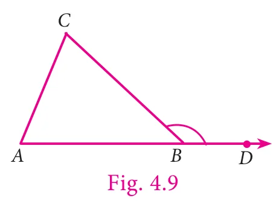
In \(\triangle ABC\), the side AB is extended to D. Observe \(\angle CBD\) which is formed by the side BC and BD. \(\angle CBD\) is known as the exterior angle of \(\triangle ABC\) at B.
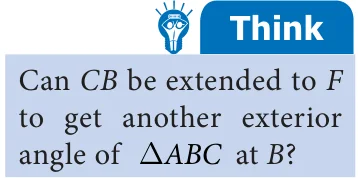
We can observe that, \(\angle ABC\) and \(\angle CBD\) are adjacent and they form a linear pair.
Besides, the other two angles namely, \(\angle CAB\) and \(\angle ACB\) are non-adjacent angles to \(\angle CBD\). They are called interior opposite angles of \(\angle CBD\).
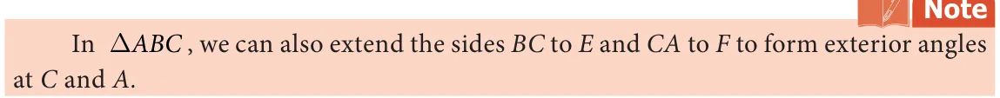
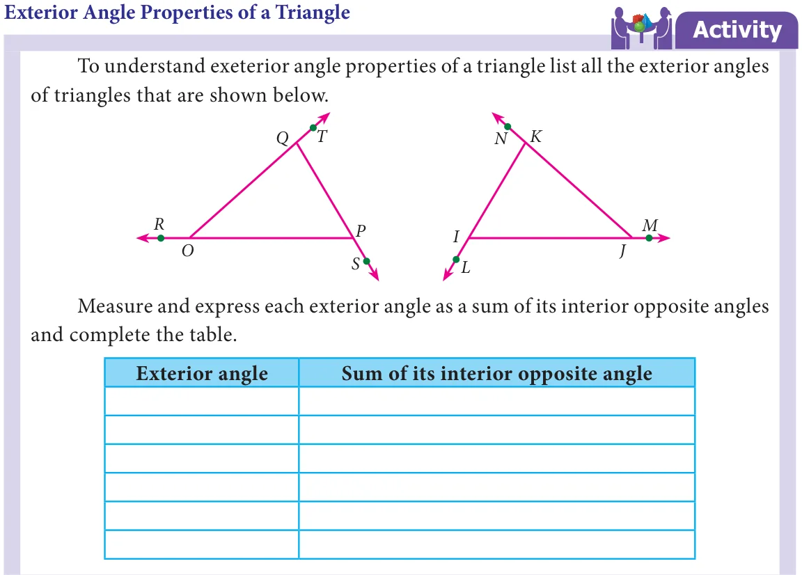
From the above activity we observe that an exterior angle of a triangle is equal to the sum of its interior opposite angles.
Now we prove this result in a formal method.
Proof
In \(\triangle ABC\), consider, the angles at A, B and C as \(a\), \(b\) and \(c\) respectively and take exterior angles at A, B and C as \(x\), \(y\) and \(z\) respectively.
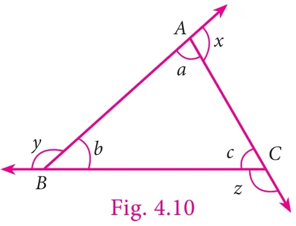
We are going to prove \(x = b + c\), \(y = a + c\) and \(z = a + b\)
\(a + x = 180^{\circ}\) [linear pair of angles are supplementary]
This gives, \(x = 180^{\circ} - a\) … (1)
Now, \(a + b + c = 180^{\circ}\) [Sum of 3 angles in a triangle is \(180^{\circ}\)]
This gives, \(b + c = 180^{\circ} - a\) … (2)
From (1) and (2),
\(x\) and \(b + c\) both are equal.
Therefore, \(x = b + c\).
In the same way, we can prove the result for other exterior angles.
Now we are going to learn one more result on the exterior angle of a triangle for which we do the following activity.
Imagine a person standing in one of the vertices (corners) and walking along the boundary of the triangle until he reaches the starting point. At each of the vertex of the triangle he would turn an angle equal to the exterior angle at that vertex. Hence after the complete journey around the triangle he would have turned through an angle equal to one complete revolution, that is \(360^{\circ}\).
We prove this result as below.
Since the angles on a straight line is \(180^{\circ}\),
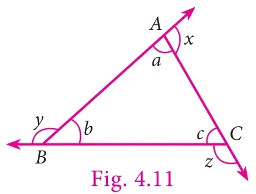
We have \(a + x = 180^{\circ}\) [linear pair of angles are supplementary]
\(x = 180^{\circ} - a\)
Similarly, \(y = 180^{\circ} - b\)
and \(z = 180^{\circ} - c\)
Therefore, \(x + y + z = (180^{\circ} - a) + (180^{\circ} - b) + (180^{\circ} - c)\)
\(= 540 - (a + b + c)\)
\(= 540^{\circ} - 180^{\circ}\) [sum of all three angles of a triangle is \(180^{\circ}\)]
\(= 360^{\circ}\)
Hence, the sum of all exterior angles of a triangle is \(360^{\circ}\).
Therefore, the properties of exterior angle gives us the following two results.
- An exterior angle of a triangle is equal to the sum of its interior opposite angles.
- The sum of exterior angles of a triangle is \(360^{\circ}\).
Example 4.5 In \(\triangle PQR\), find the exterior angle, \(\angle SRQ\).
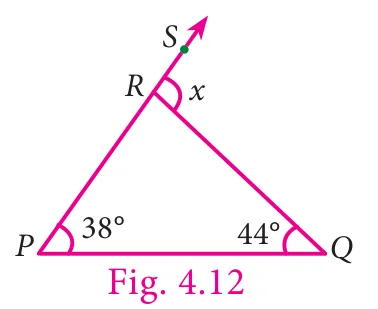
Solution
Let, \(\angle SRQ = x\)
Exterior angle = sum of two interior opposite angles
\(x = 38^{\circ} + 44^{\circ} = 82^{\circ}\)
Example 4.6 In \(\triangle LMN\), LM is extended to O. If \(\angle L = 62^{\circ}\) and \(\angle N = 31^{\circ}\), find \(\angle NMO\).
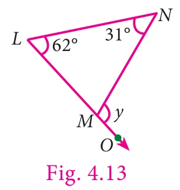
Solution
Let, \(\angle NMO = y\)
Exterior angle = sum of two interior opposite angles
\(y = 62^{\circ} + 31^{\circ}\)
\(= 93^{\circ}\)
Example 4.7 In the \(\triangle ABC\) shown in the figure, find the angel \(z\).
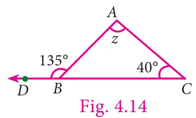
Solution
Exterior angle = sum of two interior opposite angles
\(135^{\circ} = z + 40^{\circ}\)
Subtract \(40^{\circ}\) on both sides
\(135^{\circ} - 40^{\circ} = z + 40^{\circ} - 40^{\circ}\)
\(z = 95^{\circ}\)
Example 4.8 In the given isoceles triangle IJK (Fig. 4.15), if \(\angle IKL = 128^{\circ}\), find the value of \(x\).
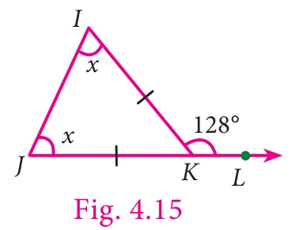
Solution
Exterior angle = sum of two interior opposite angles
\(128^{\circ} = x + x\)
\(128 = 2x\)
\(\frac{128}{2} = \frac{2x}{2}\) [on both sides, divide by 2]
\(x = 64^{\circ}\)
Example 4.9 With the given data in the Fig. 4.16, find \(\angle UWY\). What do you infer about \(\angle XWV\)?
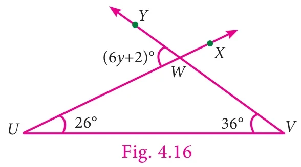
Solution
Exterior angle = sum of two interior opposite angles
\(6y + 2 = 26^{\circ} + 36^{\circ}\)
\(6y + 2 = 62^{\circ}\)
Subtract 2 from both sides
\(6y = 62 - 2\)
\(6y = 60^{\circ}\)
\(\frac{6y}{6} = \frac{60}{6}\) [on both sides, divide by 6]
\(y = 10^{\circ}\)
\(\angle UWY = 6y + 2 = 6(10) + 2 = 62^{\circ}\).
We can conclude that \(\angle XWV = \angle UWY\), because they are vertically opposite angles as well as exterior angles.